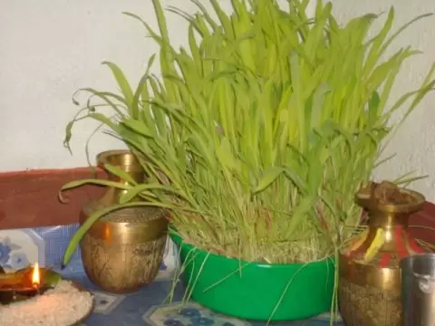

Ghatasthapana is the first day of Dashain. It is the beginning of Dashain Festival in Nepal. To be translated as Ghat=pot, and sthapana=establish in Sanskrit, its actual meaning illustrates thereby. The day starts with the establishment of the Kalash (a holy water vessel), which is done by putting holy water, flowers and grasses inside it and covering it outside with cow dung, followed by its worship which relates to Goddess Durga.
Ghatasthapana is the auspicious day, in which the sacred Jamara are grown. To grow the Jamara, at first the Kalash is put right in between the mixture of soil and sand placed in the banana leaves or something similar, in a dark place where sunlight does not enter at all. In it, barely, wheat, maize or sesame seeds are planted which are allowed to be grown up to ten days. This is because then the plants become yellow in color and become fit for the Vijaya Dashami. Unmarried girls and boys who haven’t had their Bratabandha were strictly restricted to enter inside that room, but the trend is gradually changing.